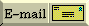

FAQs in section [34]:
[34.1] Why should I use container classes rather than simple arrays?
Because arrays are evil.
Let's assume the best case scenario: you're an experienced C programmer, which
almost by definition means you're pretty good at working with arrays. You
know you can handle the complexity; you've done it for years. And you're
smart — the smartest on the team — the smartest in the whole company. But
even given all that, please read this entire FAQ and think very
carefully about it before you go into "business as usual" mode.
Fundamentally it boils down to this simple fact: C++ is not C. That means
(this might be painful for you!!) you'll need to set aside some of your hard
earned wisdom from your vast experience in C. The two languages simply are
different. The "best" way to do something in C is not always the same as the
"best" way to do it in C++. If you really want to program in C, please do
yourself a favor and program in C. But if you want to be really good at C++,
then learn the C++ ways of doing things. You may be a C guru, but if you're
just learning C++, you're just learning C++ — you're a newbie. (Ouch; I
know that had to hurt. Sorry.)
Here's what you need to realize about containers vs. arrays:
- Container classes make programmers more productive. So if you
insist on using arrays while those around are willing to use container
classes, you'll probably be less productive than they are (even if you're
smarter and more experienced than they are!).
- Container classes let programmers write more robust code. So if
you insist on using arrays while those around are willing to use container
classes, your code will probably have more bugs than their code (even if
you're smarter and more experienced).
- And if you're so smart and so experienced that you
can use arrays as fast and as safe as they can use container classes, someone
else will probably end up maintaining your code and they'll probably
introduce bugs. Or worse, you'll be the only one who can maintain your code
so management will yank you from development and move you into a full-time
maintenance role — just what you always wanted!
Here are some specific problems with arrays:
- Subscripts don't get checked to see if they are out of bounds.
(Note that some container classes, such as std::vector, have methods to
access elements with or without bounds checking on subscripts.)
- Arrays often require you to allocate memory from the heap (see
below for examples), in which case you must manually make sure the allocation
is eventually deleted (even when someone throws an exception). When you
use container classes, this memory management is handled automatically, but
when you use arrays, you have to manually write a bunch of code (and
unfortunately that code is often subtle and
tricky) to deal with this. For example, in addition to writing the code
that destroys all the objects and deletes the memory, arrays often also
force you you to write an extra try block with a catch clause that
destroys all the objects, deletes the memory, then re-throws the exception.
This is a real pain in the neck, as shown here.
When using container classes, things are much
easier.
- You can't insert an element into the middle of the array, or even
add one at the end, unless you allocate the array via the heap, and even then
you must allocate a new array and copy the elements.
- Container classes give you the choice of passing them by reference
or by value, but arrays do not give you that choice: they are always passed by
reference. If you want to simulate pass-by-value with an array, you have to
manually write code that explicitly copies the array's elements (possibly
allocating from the heap), along with code to clean up the copy when you're
done with it. All this is handled automatically for you if you use a
container class.
- If your function has a non-static local array (i.e., an "auto"
array), you cannot return that array, whereas the same is not true for objects
of container classes.
Here are some things to think about when using containers:
- Different C++ containers have different strengths and weaknesses,
but for any given job there's usually one of them that is better — clearer,
safer, easier/cheaper to maintain, and often more efficient — than an array.
For instance,
- You might consider a std::map instead of manually writing code
for a lookup table.
- A std::map might also be used for a sparse array or sparse
matrix.
- A std::vector is the most array-like of the standard container
classes, but it also offers various extra features such as bounds checking via
the at() member function, insertions/removals of elements, automatic memory
management even if someone throws an exception, ability to be passed both by
reference and by value, etc.
- A std::string is almost always
better than an array of char (you can think of a std::string as a
"container class" for the sake of this discussion).
- Container classes aren't best for everything, and sometimes
you may need to use arrays. But that should be very rare, and if/when it
happens:
- Please design your container class's public interface in such a
way that the code that uses the container class is unaware of the fact that
there is an array inside.
- The goal is to "bury" the array inside a container class. In other
words, make sure there is a very small number of lines of code that directly
touch the array (just your own methods of your container class) so everyone
else (the users of your container class) can write code that doesn't depend on
there being an array inside your container class.
To net this out, arrays really are evil. You may not
think so if you're new to C++. But after you write a big pile of code that
uses arrays (especially if you make your code leak-proof and exception-safe),
you'll learn — the hard way. Or you'll learn the easy way by believing
those who've already done things like that. The choice is yours.
[ Top | Bottom | Previous section | Next section | Search the FAQ ]
[34.2] How can I make a perl-like associative array in C++?
Use the standard class template std::map<Key,Val>:
#include <string>
#include <map>
#include <iostream>
int main()
{
// age is a map from string to int
std::map<std::string, int, std::less<std::string> > age;
age["Fred"] = 42; // Fred is 42 years old
age["Barney"] = 37; // Barney is 37
if (todayIsFredsBirthday()) // On Fred's birthday,
++ age["Fred"]; // increment Fred's age
std::cout << "Fred is " << age["Fred"] << " years old\n";
...
}
[ Top | Bottom | Previous section | Next section | Search the FAQ ]
[34.3] Is the storage for a std::vector<T> guaranteed to be contiguous? Updated!
[Recently added new subject-index entries that point to this FAQ thanks to Peter Koch (in 3/06). Click here to go to the next FAQ in the "chain" of recent changes.]
Yes.
This means you the following technique is safe:
#include <vector>
#include "Foo.h" /* get class Foo */
// old-style code that wants an array
void f(Foo* array, unsigned numFoos);
void g()
{
std::vector<Foo> v;
...
f(v.empty() ? NULL : &v[0], v.size()); ← safe
}
The funny expression v.empty() ? NULL : &v[0] simply passes the
NULL pointer if v is empty, otherwise passes a pointer to the
first (zeroth) element of v. If you know a priori that
v is not empty, you can change that to simply &v[0].
In general, it means you are guaranteed that &v[0] + n == &v[n], where
v is a std::vector<T> and n is an integer in the range
0 .. v.size()-1.
However v.begin() is not guaranteed to be a
T*, which means v.begin() is not guaranteed to be the same as
&v[0]:
void g()
{
std::vector<Foo> v;
...
f(v.begin(), v.size()); ← Error!! Not Guaranteed!!
^^^^^^^^^-- cough, choke, gag; not guaranteed to be the same as &v[0]
}
Do NOT email me and tell me that v.begin() ==
&v[0] on your particular version of your particular compiler on your
particular platform. I don't care, plus that would show that you've
totally missed the point. The point is to help you know the kind of
code that is guaranteed to work correctly on all standard-conforming
implementations, not to study the vagaries of particular implementations.
Caveat: the above guarantee is currently in the technical corrigendum of the
standard and has not, as of this date, officially become a part of the
standard. However it will be ratified Real Soon Now. In the mean
time, the practically important thing is that existing implementations make
the storage contiguous, so it is safe to assume that &v[0] + n == &v[n].
[ Top | Bottom | Previous section | Next section | Search the FAQ ]
[34.4] How can I build a <favorite container> of objects of different types?
You can't, but you can fake it pretty well. In C/C++ all arrays are
homogeneous (i.e., the elements are all the same type). However, with an extra
layer of indirection you can give the appearance of a heterogeneous container
(a heterogeneous container is a container where the contained objects are of
different types).
There are two cases with heterogeneous containers.
The first case occurs when all objects you want to store in a container are
publicly derived from a common base class. You can then declare/define your
container to hold pointers to the base class. You indirectly store a derived
class object in a container by storing the object's address as an element in
the container. You can then access objects in the container indirectly through
the pointers (enjoying polymorphic behavior). If you need to know the exact
type of the object in the container you can use dynamic_cast<> or
typeid(). You'll probably need the Virtual Constructor
Idiom to copy a container of disparate object types. The
downside of this approach is that it makes memory management a little more
problematic (who "owns" the pointed-to objects? if you delete these
pointed-to objects when you destroy the container, how can you guarantee that
no one else has a copy of one of these pointers? if you don't delete these
pointed-to objects when you destroy the container, how can you be sure that
someone else will eventually do the deleteing?). It also makes copying the
container more complex (may actually break the container's copying functions
since you don't want to copy the pointers, at least not when the container
"owns" the pointed-to objects).
The second case occurs when the object types are disjoint — they do not share
a common base class. The approach here is to use a handle class. The
container is a container of handle objects (by value or by pointer, your
choice; by value is easier). Each handle object knows how to "hold on to"
(i.e., maintain a pointer to) one of the objects you want to put in the
container. You can use either a single handle class with several different
types of pointers as instance data, or a hierarchy of handle classes that
shadow the various types you wish to contain (requires the container be of
handle base class pointers). The downside of this approach is that it opens up
the handle class(es) to maintenance every time you change the set of types
that can be contained. The benefit is that you can use the handle class(es)
to encapsulate most of the ugliness of memory management and object lifetime.
Thus using handle objects may be beneficial even in the first case.
[ Top | Bottom | Previous section | Next section | Search the FAQ ]
[34.5] How can I insert/access/change elements from a linked list/hashtable/etc?
The most important thing to remember is this: don't roll your own from scratch
unless there is a compelling reason to do so. In other words, instead of
creating your own list or hashtable, use one of the standard class templates
such as std::vector<T> or std::list<T> or whatever.
Assuming you have a compelling reason to build your own container, here's how
to handle inserting (or accessing, changing, etc.) the elements.
To make the discussion concrete, I'll discuss how to insert an element into a
linked list. This example is just complex enough that it generalizes pretty
well to things like vectors, hash tables, binary trees, etc.
A linked list makes it easy insert an element before the first or after the
last element of the list, but limiting ourselves to these would produce a
library that is too weak (a weak library is almost worse than no library).
This answer will be a lot to swallow for novice C++'ers, so I'll give a couple
of options. The first option is easiest; the second and third are better.
- Empower the List with a "current location," and member functions
such as advance(), backup(), atEnd(), atBegin(), getCurrElem(),
setCurrElem(Elem), insertElem(Elem), and removeElem(). Although this
works in small examples, the notion of a current position makes it
difficult to access elements at two or more positions within the list (e.g.,
"for all pairs x,y do the following...").
- Remove the above member functions from List itself, and move them
to a separate class, ListPosition. ListPosition would act as a "current
position" within a list. This allows multiple positions within the same list.
ListPosition would be a friend of class List, so
List can hide its innards from the outside world (else the innards of List
would have to be publicized via public member functions in List). Note:
ListPosition can use operator overloading for things like advance() and
backup(), since operator overloading is syntactic sugar for normal member
functions.
- Consider the entire iteration as an atomic event, and create a class
template that embodies this event. This enhances performance by allowing the
public access member functions (which may be virtual functions) to be avoided during the access, and this access
often occurs within an inner loop. Unfortunately the class template will
increase the size of your object code, since templates gain speed by
duplicating code. For more, see [Koenig, "Templates as interfaces," JOOP, 4, 5
(Sept 91)], and [Stroustrup, "The C++ Programming Language Third Edition,"
under "Comparator"].
[ Top | Bottom | Previous section | Next section | Search the FAQ ]
 E-mail the author
[ C++ FAQ Lite
| Table of contents
| Subject index
| About the author
| ©
| Download your own copy ]
Revised Mar 1, 2006